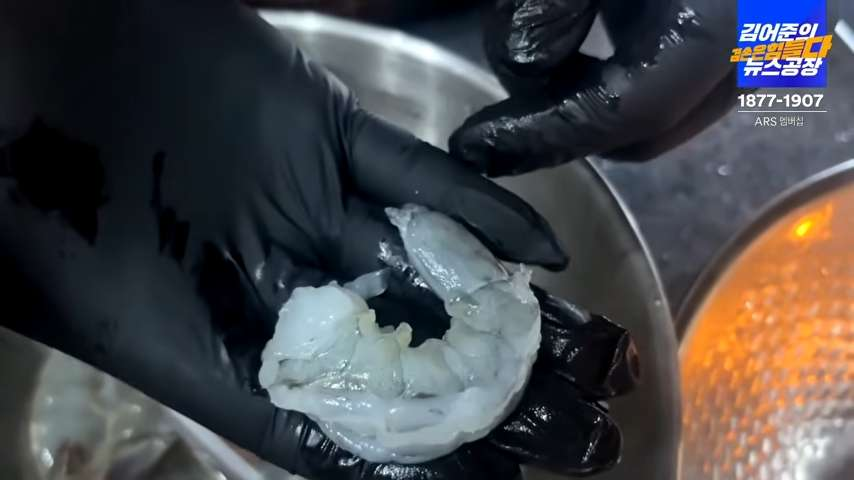
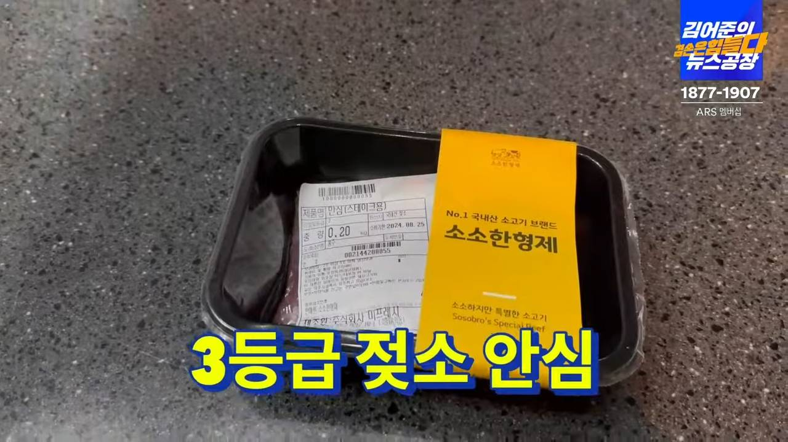
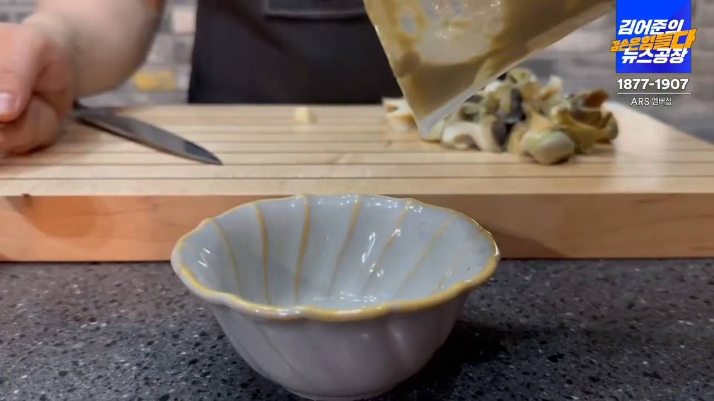
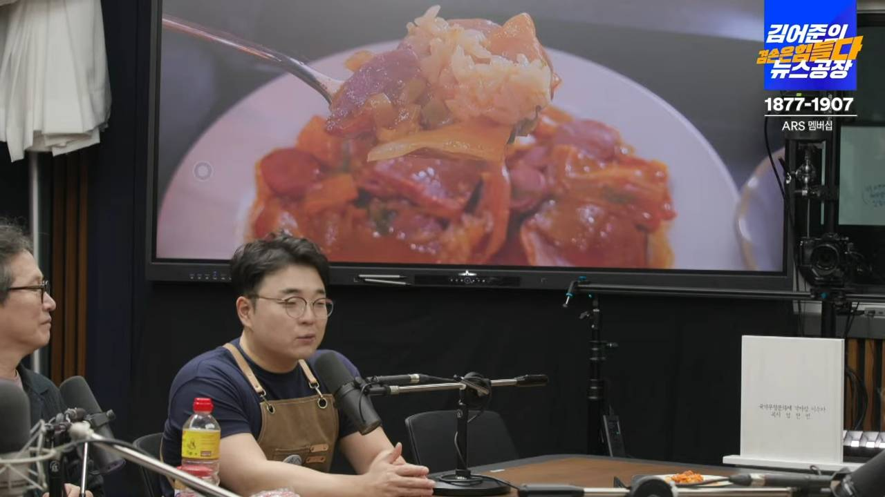

미식이 · 가족 식단표
2026년 8월 가족 식단표
- 점심 12:30 · 저녁 18:00 · 저녁 4인분, 점심 3인분(영은+아이2)
- 월요일(8/3)·금토(8/7·8·14·15)는 식단 없음 — 활동일은 화·수·목만
- 월·수·목은 오후 5시20분~5시55분 아이 픽업으로 집 비움 → 그 전에 요리 완료
1주차 (8/4 ~ 8/6)
화 8/4
점심 12:30
78회 · 2024-08-23
싱싱한 오징어를 데친 뒤 조선간장·올리브오일·방아잎·레몬즙 소스에 버무림(고추장 안 씀)
조리 12:10~ (20분)
저녁 18:00
85회 · 2024-10-11 · + 계란찜
새우 머리·껍질을 들기름에 볶아 육수 내고, 무 넣어 백간장:식초=2:1로 간
조리 17:40~ (새우는 전날 밤 손질)

수 8/5
점심 12:30
12회 · 2023-04-14 · 초간단
[국] 끓는 물에 김+달걀+간장+전분 / [전] 불린 김에 부침가루 묻혀 풋고추 고명
조리 12:05~ (25분)
저녁 18:00
68회 · 2024-06-14
삼겹살 겉면 굽고 물+조선간장+후추로 1시간 삶기 → 대파로 감싸 1시간 더 찌기
오후 3~5시 조리 완료, 픽업 후(5:55) 데우기만

목 8/6
점심 12:30
8회 · 2023-03-10
끓는 물에 동죽 넣고 입 벌리면 바로 건짐. 밥에 버터+간장 비비고 동죽살+생달래
조리 12:15~ (동죽은 오늘 아침 신선 구매)

저녁 18:00
24회 · 2023-07-07 · + 오이지무침
닭+물만 넣고 뚜껑 열고 1~2시간 끓임, 소금만으로 간
전날 밤 해동, 당일 아침 9시부터 끓이기 시작
2주차 (8/10 ~ 8/13)
월 8/10
저녁 18:00
33회 · 2023-09-15 · + 콩나물국
가지에 감자전분 입히고, 버터에 다진 소고기+토마토파스타소스 볶다가 가지 넣어 완성
픽업 전(16:45~17:15) 요리 끝내고 데우기만
화 8/11
점심 12:30
76회 · 2024-08-09
감자+우유+버터로 매시드포테이토, 안심 스테이크 굽고 노각(들기름·소금 절임) 곁들임
조리 12:00~ (30분)

저녁 18:00
19회 · 2023-06-02 · + 계란국 + 오이채
참소라 5~10분 살짝 덜 익게 삶고, 내장에 우유·간장·고추·소금·마늘·레몬즙 섞어 소스
조리 17:45~ (15분)

수 8/12
점심 12:30
36회 · 2023-10-20 · 등갈비·묵은지
멸치육수 내고 등갈비+통후추 넣어 30분, 씻은 묵은지 넣고 30분 더 끓임
1시간 걸려서 11:30부터 시작
저녁 18:00
28회 · 2023-08-11 · + 미역국
파기름 내고 고추장 볶아 고추기름, 삼겹살 볶아 버터밥에 얹고 초피가루
삼겹살은 전날 소분, 픽업 전(16:45~17:15) 요리 끝내고 데우기만
목 8/13
점심 12:30
79회 · 2024-08-30
두테기름에 파+양배추+햄 볶고 사골육수+조선간장, 땅콩버터·치즈로 진하게, 마무리 식초
조리 12:10~ (20분)

저녁 18:00
13회 · 2023-04-21 · + 두부된장국
가시오이는 방망이로 두드려 향 내고, 한우+통마늘+오이를 식초·소금으로 볶음
픽업 전(16:45~17:15) 요리 끝내고 데우기만
장보기 리스트
집에 재료 하나도 없다고 가정한 완전 목록 — 있는 건 지우고 나머지만| 정육·수산·유제품·계란 | |
|---|---|
| 오징어 | 1마리 |
| 흰다리새우(껍질째) | 400g |
| 원초 생김 | 1봉 |
| 계란 | 1판 |
| 삼겹살 덩어리(대파육용) | 700g |
| 동죽(목요일 아침 구매) | 700g |
| 우리맛닭 | 1마리 |
| 통조림 햄 | 1캔 |
| 다진 소고기 | 300g |
| 소고기 안심(스테이크용) | 200g |
| 참소라 | 4~5개 |
| 냉장 등갈비 | 500g |
| 삼겹살 | 500g |
| 햄·소시지 | 각 150g |
| 불고기/한우용 소고기 | 300g |
| 두부 | 1모 |
| 우유 | 500ml |
| 치즈(슬라이스)·치즈가루 | 적당량 |
| 채소 | |
|---|---|
| 방아잎 | 소량 |
| 무 | 1/2개 |
| 풋고추 | 2개 |
| 대파 | 6대 |
| 생달래 | 소량 |
| 노지 시금치 | 1단 |
| 가지 | 3개 |
| 노각(늙은 오이) | 1개 |
| 감자 | 3개 |
| 묵은지 | 300g |
| 양배추 | 1/4통 |
| 가시오이 | 4개 |
| 콩나물 | 300g |
| 마늘 | 1통 |
| 양파 | 1개 |
| 양념·소스·기타 | ||
|---|---|---|
| 조선간장 | 1병 | 오징어볶음·대파육·부대찌개 |
| 백간장 | 1병 | 새우무국(국간장 대체 가능) |
| 올리브오일 | 1병 | 오징어볶음·시금치샌드위치 |
| 레몬 | 2~3개 | 레몬즙용 — 오징어볶음·시금치샌드위치·참소라 |
| 들기름 | 1병 | 새우무국·노각스테이크 |
| 식초 | 1병 | 새우무국·오이볶음·부대찌개 |
| 전분 | 1봉 | 생김국·가지볶음 |
| 부침가루 | 1봉 | 생김전 |
| 통후추 | 1통 | 대파육·김치찜 |
| 버터 | 1개 | 동죽덮밥·가지볶음·노각스테이크·제육볶음 |
| 토마토 파스타소스 | 1병 | 가지볶음 |
| 초피가루(제피가루) | 1통 | 제육볶음(산초가루 대체 가능) |
| 고추장 | 1통 | 제육볶음 |
| 두테기름 | - | 부대찌개(식용유+버터 대체 가능) |
| 사골 코인육수 | 1팩 | 부대찌개 |
| 땅콩버터 | 1병 | 부대찌개 |
| 견과류 | 소량 | 시금치 샌드위치 |
기본 상비 — 소금, 밥(쌀) 등은 이미 있을 가능성이 높지만 처음이니 확인해서 없으면 같이 구매
장보기 일정
일요일 밤(8/2)1주차 재료 전체
목요일 아침(8/6)동죽 (당일 점심용, 신선 구매)
일요일 밤(8/9)2주차 재료 전체